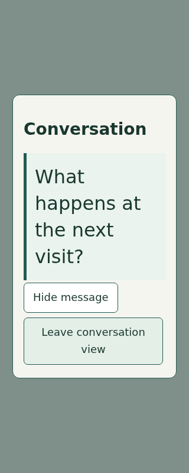
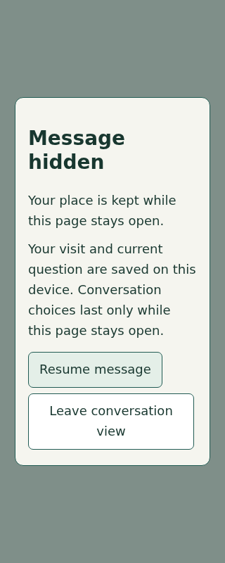

1 / 12 · The product decision
Help someone show their words during a visit
My Visit Notes already helps with preparation, answers, follow-up and backups. This addition brings a chosen question or request into a separate, simpler display. It leaves the larger private workspace out of sight.
Speaker notes
The product gap is visible in the existing interface: preparation and display shared one workspace. We have not measured how common the difficulty is or whether people prefer this solution.
2 / 12 · The complete journey
Choose. Preview. Show. Pause. Return.
The person chooses nonempty questions and requests, checks the exact wording, and enters the display. They can show a request, return to the question, hide the message and deliberately return to a personal answer note or the existing review.
Speaker notes
Demonstrate one fictional question and one request. Do not present a completed software journey as a participant success story. The same question record remains the source throughout.
3 / 12 · Before showing anything
Selection starts with the person
Questions and requests start unchecked. Optional examples can be edited for the current session. A preview shows exactly what will be available. A requests-only conversation is allowed; the app does not invent a question or demand a diagnosis.
Speaker notes
Explain that editing a request here does not rewrite saved reusable requests. Session choices disappear when the page closes. Cancel returns to the workspace without saving those choices.
4 / 12 · During the conversation
One chosen message, with a few controls
A question or request is displayed in large wrapping text. Private preparation, personal answer notes, visit titles, other visits and unchosen questions are outside the display. Requests temporarily replace the question, and returning keeps the same place.

Speaker notes
The background is hidden and the modal confines keyboard interaction. Text is rendered literally, not interpreted as HTML. A browser accessibility-tree check is narrower than testing with an actual screen reader.
5 / 12 · Interruption
Hide means hide—not open private notes
Hide and Escape remove the message without returning to the private workspace. The display responds to the page becoming hidden. Returning requires a deliberate resume. A reload never automatically reopens the conversation view.

Speaker notes
The visibility-event test is an injected browser event, not a real phone interruption. App-switcher images, screenshots and operating-system behavior are outside the app’s guarantee.
6 / 12 · Keeping the place
Be precise about what is saved
For a saved visit, moving between questions uses the existing saving path. A paused or exit screen reports whether that change is saved. If saving fails or waits, the person can keep their in-memory place but must not be told it is safely stored.
Speaker notes
A delayed-save test holds the browser’s actual write lock. A failure test prevents storage writes. Both inspect the saved records and the visible message. The question position is saved; session choices and temporary request edits are not.
7 / 12 · Private return
Take the device back before opening notes
Leaving explains that private workspace content can become visible. The person chooses answer entry, preparation or review. A personal answer stays outside the conversation display. Changed question wording requires fresh unchecked choices and another preview.
Speaker notes
This is not a lock. Someone holding an unlocked device can deliberately leave, use browser tools or open other data. Avoid calling the feature a secure handoff.
8 / 12 · Finish the appointment
Keep one record of what still needs doing
Showing a question does not mark it answered. After the visit, the existing review keeps questions, personal answers and next steps together. Existing summary choices still decide what is shared. Nothing is sent automatically.
Speaker notes
Do not create a second question-state system for the display. Link this demonstration back to the existing follow-up journey so the feature is understood as part of the product, not a disconnected screen.
9 / 12 · Engineering evidence
Test the ordinary journey and the interruptions
14 of 14 recorded conversation checks passed. The checks cover selected wording, requests, save timing and failures, keyboard operation, print exclusion, narrow layout and offline reopening. The report records the exact source hashes.
- CV01 — Temporary full journey with exact wording, requests, hidden private notes and review: passed
- CV02 — Empty selection, cancellation and requests-only return: passed
- CV03 — Saved current question survives reload without reopening conversation: passed
- CV04 — Failed write keeps in-memory place and gives an honest warning: passed
- CV05 — Held save updates the paused status when it completes: passed
- CV06 — Other-tab edits hide the display and warn without overwriting: passed
- CV07 — Changed wording requires fresh unchecked selection: passed
- CV08 — Keyboard confinement and print exclusion: passed
- CV09 — Long wording, reading choices and enlarged layout: passed
- CV10 — Offline reopening supports a new conversation: passed
- CV11 — Background visibility event hides words; returning does not reveal them: passed
- CV12 — Closing during a waiting position save leaves the last saved position: passed
- CV13 — Keyboard selection to display, request, hide and private return: passed
- CV14 — Accessibility tree excludes private background and cancel leaves saved data alone: passed
Recorded 2026-09-16T21:52:33.848Z. Results and source hashes.
Speaker notes
This presentation reads the latest report at build time. The complete release still requires the existing regression suites, document inspection and an extracted-package journey. Consult the acceptance audit for status; do not infer release approval from this count alone.
10 / 12 · What we do not know
A working display is not proof of an easier visit
No participants or real appointments were involved. We have not shown reduced effort, improved communication or medical benefit. Physical phones and screen-reader use remain unverified. Anyone may prefer paper, their existing notes app or another communication tool.
Speaker notes
No participant recruitment blocks the engineering milestone. A later evaluation could compare the full journey with those alternatives, but that is a separate activity, not a result already obtained.
11 / 12 · Delivery
The feature includes instructions and proof
The delivery includes the app, detailed requirements, ten fictional journeys, this executive briefing with speaker notes, help and an acceptance map. The release must contain the new offline module and pass its checks after extraction.
Speaker notes
Review the archive manifest and matching verification result together. Older transfer-release evidence does not approve later source changes. The build should reject stale result hashes.
12 / 12 · Decision and boundary
Complete this focused addition before expanding it
Finish the selected-word journey and verify its failure paths. Keep accounts, cloud sharing, automatic speech, diagnosis-specific presets and generated medical answers outside this goal. Do not add complexity just because another feature is possible.
Speaker notes
Approval is for a tested engineering release with visible limits. It is not approval for clinical use, proof of adoption or a claim that one display works for every person.